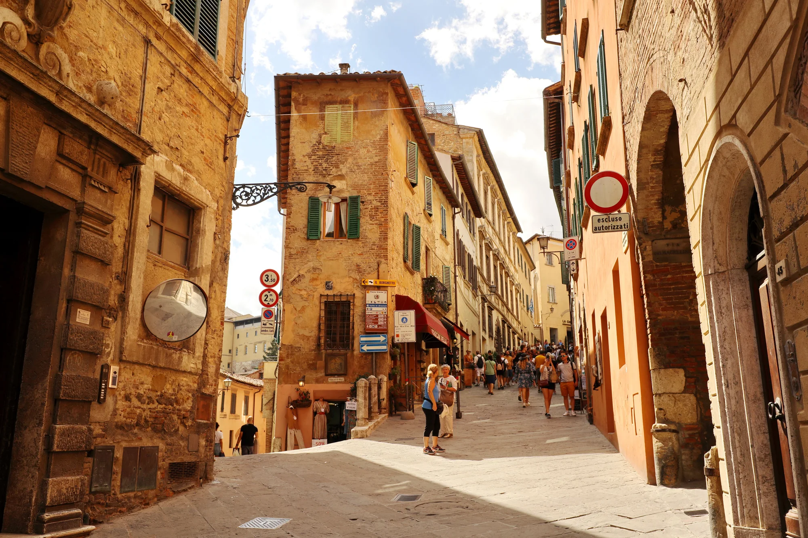
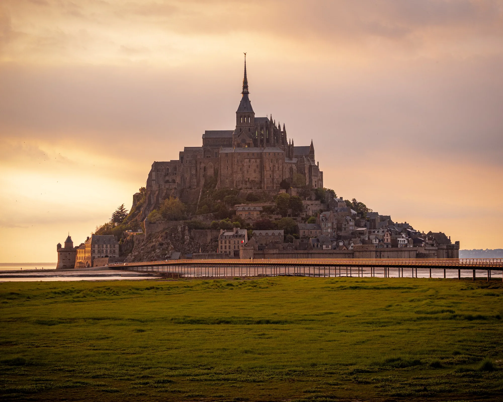
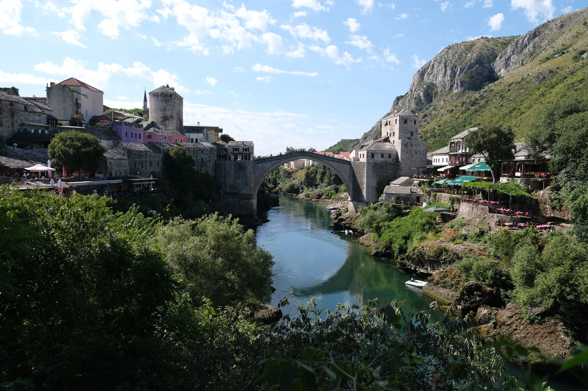
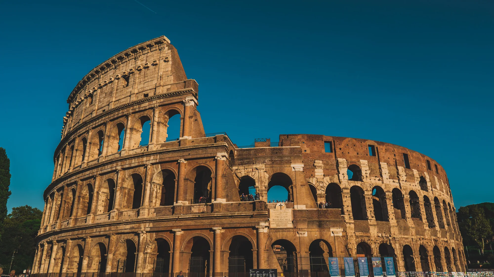
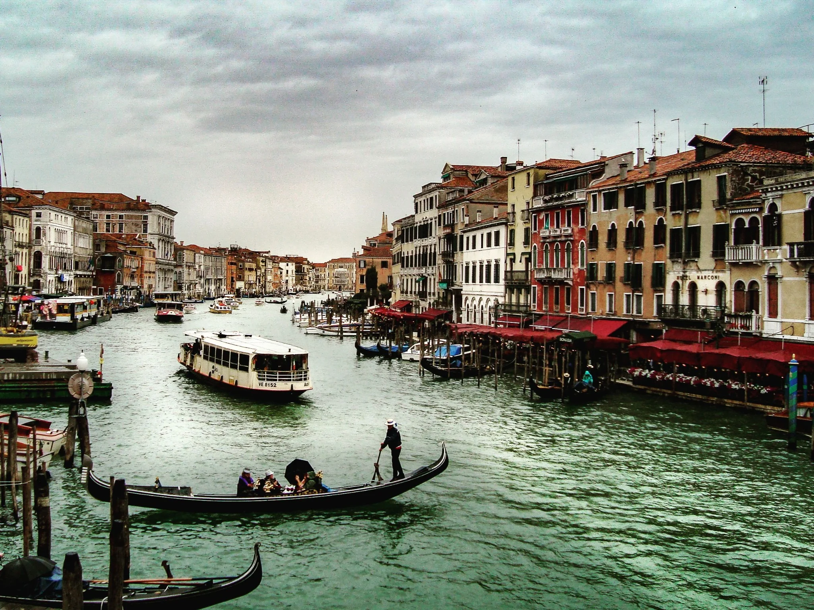
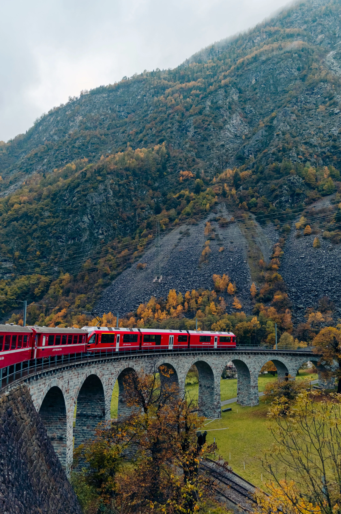

Centros antigos ainda vivos
Ruas de pedra funcionam melhor quando vistas como bairros contemporâneos, não como museus a céu aberto.

Castelos, muralhas, centros antigos e paisagens onde o passado ainda organiza a experiência.
Patrimônio ganha sentido quando arquitetura, contexto e vida cotidiana aparecem juntos.

Ruas de pedra funcionam melhor quando vistas como bairros contemporâneos, não como museus a céu aberto.

Elas ligam margens, mas também impérios, rotas comerciais e histórias de reconstrução.

Na capital italiana, diferentes eras permanecem visíveis ao mesmo tempo, atravessadas pela vida cotidiana.


Cidades e regiões onde patrimônio, atmosfera e paisagem formam uma experiência inseparável.
Torres, pontes e uma cidade medieval que continua intensamente viva.
Termas, Danúbio e arquitetura moldada por impérios sucessivos.
Muralhas diante do Adriático e uma história marcada por comércio e resistência.
Camadas imperiais, cristãs, barrocas e modernas convivendo na mesma rua.
Memória hanseática, reconstrução e identidade báltica.
Castelos, cidades saxônicas e paisagens ligadas a lendas e fronteiras.
Ruas antigas não são cenários congelados. Elas guardam decisões políticas, comércio, conflitos, crenças e formas de vida que continuam visíveis no presente.
Um livro, documentário ou podcast antes de cada grande parada muda o que você consegue perceber.
Depois de um palácio ou ruína, caminhe por um mercado, um bairro ou um café. É ali que o passado volta a respirar.
A história não está apenas nos monumentos. Ela continua circulando pelas ruas.
Viajar por centros antigos é aprender a enxergar camadas — e perceber que toda paisagem foi construída por escolhas humanas.
Parcerias editoriais, destinos, turismo e projetos de conteúdo.